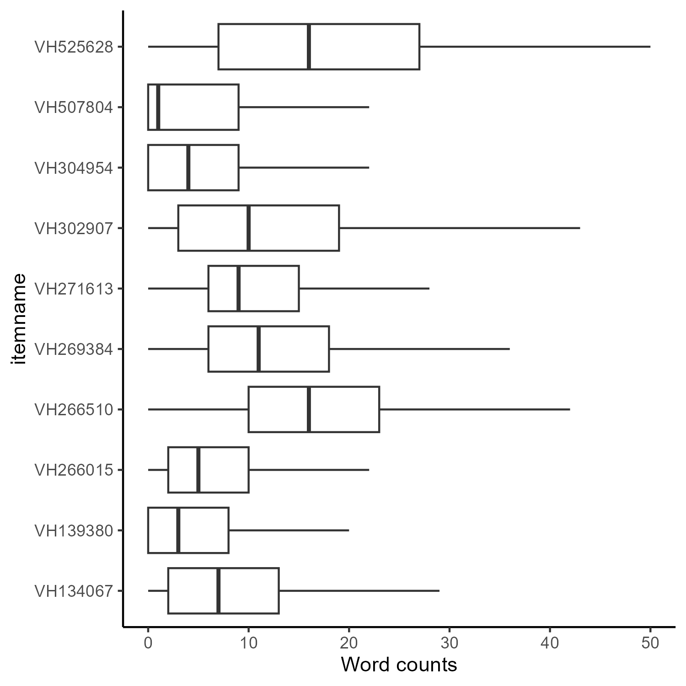
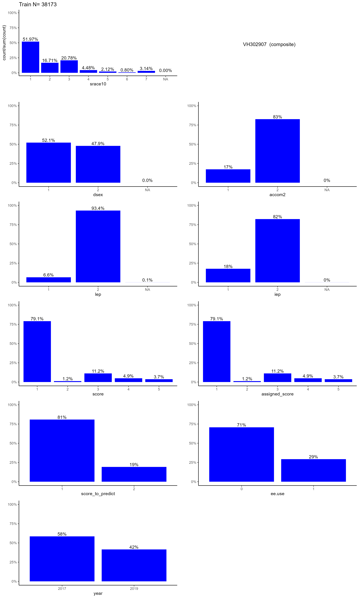

NAEP Math Automated Scoring Challenge Overview
The National Center for Education Statistics (NCES) of the Institute of Education Sciences invites researchers and assessment practitioners to develop algorithms that predict the scores given by human raters on open-ended items for NAEP mathematics assessment for students in fourth and eighth grades. The purpose of the challenge is to help NAEP to identify effective approaches, expected levels of accuracy, and methods to ensure that automated approaches do not demonstrate bias based on a student’s social context or demographic factors.
This Challenge requires that submissions provide predicted human scores and are transparent in their submissions by explaining the methods used to obtain those results. In addition to the score prediction challenge, participants are invited to create submissions for an “innovative interpretability challenge” that can help explain algorithm functioning and provide evidence for the validity of the algorithm in measuring student responses. Submission to the score prediction challenge (and accuracy within top 10 entries) is required for eligibility for the interpretability challenge.
Challenge Details
Total Cash Prizes Offered: Maximum of $40,000 for first-place prediction entry, $20,000 for first-place interpretability entry.
Type of Challenge: Automated Scoring of Mathematics
Assessment Constructed Response Items using Natural Language Processing.
Key Dates
| Milestone | Date |
|---|---|
| Challenge Opens | 2/21/23 |
| Application Deadline | 3/20/23 |
| Test Dataset Released | 5/1/23 |
| Submission Deadline | 5/8/23 |
| Winners Announced | June 2023 |
An informational webinar will be held on March 7th 2023 @ 12:00 ET. Attendance at the webinar is not required to participate in the challenge.
Advance webinar registration required at the following URL.
Table of Contents
- Description
- Eligibility
- Dataset
- Evaluation-Criteria
- Participation-Process
- Submission-Instructions
- Prizes
- Timeline
- Appendix-A-Methods
- References
Challenge Administration Platform
The complete announcement and application to participate in the Challenge is posted on the current Github site.
This platform will be used for the following purposes:
Information: detailed information about the challenge will be posted here and available to the public. For updates, please “watch” the repository.
Questions: all questions about the challenge should be posted as an issue and will be publicly available. Responses will typically be made within 24 business hours.
Please note that no data will be provided via Github nor should any submissions be posted via Github; this application is not authorized for classified data exchange by the Department of Education. Items may be discussed but no response information should be shown or shared.
Secure server information will be provided to approved participants via the contact specified on the data application.
Challenge Description
Background
Automated Scoring using natural language processing (NLP) is a well-developed application of artificial intelligence in education. Results for predicting human assigned scores for essay items have been demonstrated to be on-par with the inter-rater reliability of human scorers for well-developed items (Shermis 2014). Currently, the National Assessment of Educational Progress (NAEP) includes constructed responses1 in a large proportion of mathematics items to provide students with an opportunity to explain their reasoning or the process they used to respond to a mathematics item. While many of these items can be scored using automated rule-based methods, others contain more complex responses that cannot be accurately scored using these methods. Currently, NAEP alliance members assemble teams of human scorers who score millions of student responses to NAEP’s assessments.
A public data challenge held in 2021 demonstrated that NAEP’s constructed response reading items can be scored successfully using natural language processing. The successful NLP approaches used in the prior challenge used large language models, which contain billions of parameters. These models are intrinsically difficult to understand by human reviewers. The inability to understand how algorithms calculate predictions makes it difficult to have confidence in the algorithm, despite high degrees of accuracy (Doshi-Velez and Kim 2017). This problem is not unique to education, and the definition of interpretability, let alone consistent criteria to achieve it, have not been established (Lipton 2018). As a result, this challenge provides an opportunity and incentive for teams to conduct additional work in this area.
In addition to increasing trust in prediction results, interpretability can help provide additional information about patterns observed in responses related to student math performance which can help to provide additional insights from assessment responses. Further, this information may be helpful in developing assessment items that are focused on areas of key issues.
Current Challenge
This challenge seeks to expand on this earlier work to ascertain how accurately automated scoring models can perform well with a representative subset of NAEP math constructed response items administered in 2017 and 2019 to students in grades 4 and 8. The ultimate goal is to produce reliable and valid score assignments, provide additional information about responses (e.g. common errors), and generate scores more quickly while reducing scoring costs.
A custom rubric and scoring guide is created for each item and used to train human scorers. Successful respondents should also build a predictive model specific to each item, using current state-of-the-art practices in natural language processing. As described more extensively in the “Dataset section, for some items the constructed response portion of the item is scored in isolation from other aspects of the response, and in other items there is an overall score in which the predicted score will incorporate results from calculations in addition to the constructed response.
Detailed item information is available and the training guides used for human scorers are included in the classified dataset to approved participants. Training data from prior human scoring administrations will be provided for all items to participants.
In addition to providing a set of predicted scores for these items, successful respondents to this Challenge will provide a technical report that describes the data pre-processing, model training, and model performance information that was used to create the predicted scores. Responses must include analyses to ensure that the predictions are not systematically different from human-assigned scores by student social context or demographic information (i.e that bias is not observed); algorithm accuracy should be similar for students from all backgrounds and not exhibit bias. Student information provided includes Race/ethnicity, sex/gender, English language learner status, individualized education plans, and accommodations.
The Federal Government is particularly interested in submissions that provide accurate results and meet these equity goals, as they have been absent from a good deal of recent research in automated scoring, particularly for solutions using artificial intelligence (e.g., neural networks, transformer networks) and other complex algorithmic approaches (Kumar and Boulanger 2020).
Both the technical report and predicted scores will be submitted simultaneously. The report will be evaluated before respondents’ predicted score submissions are evaluated. Only reports that meet acceptance criteria (as specified under “evaluation criteria”) will be considered as valid submissions and evaluated for accuracy of the predicted scores compared to the hold-out test dataset.
This process is consistent with the operational processes that the Department intends to use in future applications of automated scoring and artificial intelligence; only models that can provide substantive validity evidence and demonstrate that bias is not observed would be approved for purchase and use.
Eligibility Information
Institutions and individuals that have the ability and capacity to conduct research are eligible to apply. Eligible applicants include, but are not limited to, nonprofit and for-profit organizations and public and private agencies and institutions, such as colleges and universities. Due to prior access to the items and test data, current NAEP Alliance member organizations are not eligible to participate. Organizations must be located within the United States due to data privacy requirements. In addition to these criteria, organizations must demonstrate the following: \[1\]
Requirements
Prior Experience with Sensitive Data. Applicants must have prior experience handling confidential federal or education data data in a secure manner. Relevant experience includes (but is not limited to): collecting, processing, and or/analyzing confidential data on contract with a U.S. government agency; prior successful application for an IES restricted-use data license; approval to analyze confidential data at other federal agencies (for example, to access data within a Federal Statistical Research Data Center (FSRDC); agreements with K-12 school district/state departments of education to access confidential or classified data; or agreements with other local or federal agencies to safely process confidential data.
Secure Data Handling Procedures. Applicants must meet minimum computer security requirements as specified in the “security plan for remote access to NAEP Materials” document. Please note that there are reductions to the requirements given the web-based and distributed nature of automated scoring work. Fields marked as “NA” are not applicable and do not need to be completed.
Confidentiality Agreement & Notarized Affidavit of Non-Disclosure. For more information, please see the appropriate document.
Requirements for Participation & Confidential Data Security
The datasets used for this challenge contain student responses from previous NAEP assessments and are therefore considered NCES confidential materials. All participants must confirm that they are able to meet NCES Confidential Data security requirements, submit non-disclosure agreements about student responses, and confidentiality agreements. These requirements include restrictions on the use of data, security of data, and destruction of data when the analysis is completed. Data must also be destroyed/deleted within 30 days of completing the Challenge and all participants must submit a signed and witnessed form confirming that action. This form is also included within the security application.
These confirmations and documentation of secure data handling requirements must be documented in the “NAEP Secure Data Access Application”. This application must be completed and approved by IES personnel before an applicant will be provided access to the response data. Completed applications (please enrypt before transmission) should be sent to: automated-scoring-challenge@ed.gov.
Directly identifying personal information is not provided for use in analyses. It is possible, although extremely unlikely, that responses may contain personal information about individual respondents or the contexts in which they learn. Should any individually identifiable information about students, their families, and their schools be identified in the responses, it must be reported to NCES immediately and removed from any modeling activity or analysis.
No person may:
Use data for any purpose other than the completion of this challenge
Make any publication without prior review and approval by IES. This review is conducted with particular attention to ensure that no individual person in the research sample can be identified in the publication.
The Education Sciences Reform Act of 2002 requires IES to develop and enforce standards to protect the confidentiality of students, their families, and their schools in the collection, reporting, and publication of data. The IES confidentiality statute is found in 20 U.S.C. 9573. Anyone who violates the confidentiality provisions of this Act when using the data may be found guilty of a class E felony and can be imprisoned for up to 5 years, and/or fined up to $250,000.
No future NAEP contract work is guaranteed on the basis of performance in this competition.
\[1\]Individuals at selected organizations must access and analyze the data in the United States but they do not need to be U.S. citizens or residents. For example, a foreign student at a U.S.-based university may participate in the challenge as long as they are analyzing the data from within the United States.
Eligibility Information
Institutions and individuals that have the ability and capacity to conduct research are eligible to apply. Eligible applicants include, but are not limited to, nonprofit and for-profit organizations and public and private agencies and institutions, such as colleges and universities. Due to prior access to the items and test data, current NAEP Alliance member organizations are not eligible to participate. Organizations must be located within the United States due to data privacy requirements. In addition to these criteria, organizations must meet the following criteria:
Requirements
Prior Experience with Sensitive Data. Applicants must have prior experience handling confidential federal or education data data in a secure manner. Relevant experience includes (but is not limited to): collecting, processing, and or/analyzing confidential data on contract with a U.S. government agency; prior successful application for an IES restricted-use data license; approval to analyze confidential data at other federal agencies (for example, to access data within a Federal Statistical Research Data Center (FSRDC); agreements with K-12 school district/state departments of education to access confidential or classified data; or agreements with other local or federal agencies to safely process confidential data.
Secure Data Handling Procedures. Applicants must meet minimum computer security requirements as specified in the “security plan for remote access to NAEP Materials” document. Please note that there are reductions to the requirements given the web-based and distributed nature of automated scoring work.
Confidentiality Agreement & Notarized Affidavit of Non-Disclosure. For more information, please see the appropriate document.
Requirements for Participation & Confidential Data Security
The datasets used for this challenge contain student responses from previous NAEP assessments and are therefore considered NCES confidential materials. All participants must confirm that they are able to meet NCES Confidential Data security requirements, submit non-disclosure agreements about student responses, and confidentiality agreements. These requirements include restrictions on the use of data, security of data, and destruction of data when the analysis is completed. Data must also be destroyed/deleted within 30 days of completing the Challenge and all participants must submit a signed and witnessed form confirming that action. This form is also included within the security application.
These confirmations and documentation of secure data handling requirements must be documented in the “NAEP Secure Data Access Application”. This application must be completed and approved by IES personnel before an applicant will be provided access to the response data. Completed responses (please enrypt before transmission) should be sent to: automated-scoring-challenge@ed.gov.
Directly identifying personal information is not provided for use in analyses. It is possible, although extremely unlikely, that responses may contain personal information about individual respondents or the contexts in which they learn. Should any individually identifiable information about students, their families, and their schools be identified in the responses, it must be reported to NCES immediately and removed from any modeling activity or analysis.
No person may:
Use data for any purpose other than the completion of this challenge
Make any publication without prior review and approval by IES. This review is conducted with particular attention to ensure that no individual person in the research sample can be identified in the publication.
The Education Sciences Reform Act of 2002 requires IES to develop and enforce standards to protect the confidentiality of students, their families, and their schools in the collection, reporting, and publication of data. The IES confidentiality statute is found in 20 U.S.C. 9573. Anyone who violates the confidentiality provisions of this Act when using the data may be found guilty of a class E felony and can be imprisoned for up to 5 years, and/or fined up to $250,000.
No future NAEP contract work is guaranteed on the basis of performance in this competition.
\[1\] Individuals at selected organizations must access and analyze the data in the United States but they do not need to be U.S. citizens or residents. For example, a foreign student at a U.S.-based university may participate in the challenge as long as they are analyzing the data from within the United States.
Dataset Description
Participants will be provided access to digital files that contain information related to the assessment items, the scoring guides used to train human raters, and response data that includes XML-formatted text, human assigned scores, and demographic information about the respondent. The responses correspond to items which assess student knowledge and ability in a variety of content areas and complexity levels.
Information for 10 items will be provided for this challenge and eligible entries will provide predicted scores for every student response. These items have been reviewed to ensure that the content is appropriate to natural language processing (e.g. “explain your answer”) and that there is sufficient distribution of responses to provide a meaningful prediction challenge. The data will be split into a training dataset and a test dataset.
The training dataset will be provided first and then a test dataset (with responses only) will be provided one week before the challenge deadline. Detailed information about responses included for each item is provided in the “Variables with different meanings for each item” section below and in the scoring guides included in the “Item information.zip” file.
Data File Information
Data for the competition has been aggregated into a single file from multiple test items. For this challenge you will be using items from the grade 4 and grade 8 NAEP Math Assessments that were administered in 2017 and 2019. Information about the aggregated file and how it was prepared, along with general instructions for the challenge and data handling rules are contained below. Questions about the challenge should be posted to the Github “issues” page for the challenge: https://github.com/naep-as-challenge
Variables Common to All Items
Some variables about the item, responses, and respondent were available for all items in the source data. Those variables are described in the table below.
| Variable | Description | Type | Values (if constrained) |
|---|---|---|---|
| student_id | pseudonymous student ID – not linkable across item-years | string | e.g. “xYzq4StVaC” |
| accession | Item number | string | e.g. “VH139087” |
| score_to_predict | Outcome to predict | integer | e.g. 1, 2, 3 |
| predict_from | Text related to “score_to_predict” | string | “Because A>B” |
| year | Year assessment was administered | integer | 2017, or 2019 |
| srace10 | Student’s race reported by the school | string | (1=‘White, not Hispanic’, 2=‘Afric Amer, not Hisp’, 3=‘Hispanic of any race’, 4=‘Asian, not Hispanic’, 5=‘Amer Ind/Alaska Nat’, 6=‘Native Ha/Pac Island’, 7=‘>1 race, not Hispanic’) |
| dsex | Student’s sex | integer | 1=male, 2=female |
| accom2 | Student accommodations. Note: Item VH304954 did not have accom2 so for this item accom2 is entirely NA. | integer | 1=‘Accommodated’, 2=‘Not accommodated’ |
| iep | IEP | integer | 1=SD, 2=Not SD |
| lep | English learner status | integer | 1=English Learner, 2=Not English Learner |
| rater_1 | Score given by human rater (component-scored items only) | string | e.g. 1A, 2B, 3A … |
| pta_rtr1 | Part A human rater score (composite items only) | string | e.g. 1, 2A, 2, 3A … |
| ptb_rtr1 | Part B human rater score (composite items only) | string | e.g. 1, 2A, 2, 3A … |
| ptc_rtr1 | Part C human rater score (composite items only) | string | e.g. 1, 2A, 2, 3A … |
| composite | Composite score (atomic-scored items only) | integer | e.g. 1, 2, 3 |
| score | Score (containing partial credit codes) | string | e.g. 1A, 2B, 3A … |
| assigned_score | Simplified numeric score total for item (1, 2, 3…) from either “rater_1” or “composite” | integer | 1, 2, 3 … |
| ee_use | Item used equation editor | integer | 0=no EE use, 1=EE use |
Data Processing Information
There are four “Type II” items which were composed of multiple sub-items or parts that each have their own set of scores and response fields. For the purpose of the challenge, participants are requested to score the combined overall score (score_to_predict), based on the constructed response component which we believe is the most salient (predict_from), using NLP. For the six other items, called “Type I” items here, there are multiple parts within an item; however, these parts are considered dependently linked portions of the item and, as such, were assigned a single score that encompasses the responses contained within both parts.
For the “Type II” items, the sub-item scores have been combined into a single “assigned_score” variable which is described in the common variables table above. The original part scores are also included and can be decoded using the item scoring guides provided in “Item information.zip” which will be provided to participants with the responses upon approval of the data application.
Note that this composite variable is not always the outcome which contestants should predict. To make it clear which outcome contestants should predict, we’ve created a variable “score_to_predict” which is the field which will be used as the outcome variable to create predicted scores for. We’ve also created a variable named “predict_from” to identify the text with the most relevant constructed response text to use when creating predicted scores.
The original item data contained extended constructed response and short constructed response (ECR and CR) text, item selections for multiple choice, and some process data (such as response “eliminations” for CR items) embedded within a json data structure, with MathML (XML) equation editor codes nested inside. The original test item data had different XML structures for each item, and within item there are differences in the XML coding between the year of administration. These differences may impact how predictive models will perform across years.
These data have been parsed to make them easier to process. The parsed XML data, in contrast to the common variables listed above, are different for each item. The item specific variables are described below the item name in the list that follows. Please note, the format of the data values for the process data (e.g. eliminations) may differ by year for the same item. For example, eliminations may be recorded as “(1, 2, 5)” in 2017 and “1, 2, 5” in 2019.
Also note, the CR text has been parsed but not completely cleaned. The data was analyzed for sensitive information (e.g. personally-identifiable information, profanity, toxic language) and some responses were removed as a result. However, spellcheck has not been applied to correct what may be obvious spelling errors.
Variables with different meanings for each item
Please consult the scoring guides included in “Item information.zip” to map the fields below to the question areas.
For item VH134067
parsed_xml_v1– Text for ECR item response.
For item VH139380
parsed_xml_v1– SCR text
parsed_xml_v2– ECR text
For item VH266015
source1– drag and drop tile “from”
source2– drag and drop tile “from”
source3– drag and drop tile “from”
source4– drag and drop tile “from”
target1– drag and drop tile “to”
target2– drag and drop tile “to”
target3– drag and drop tile “to”
target4– drag and drop tile “to”
parsed_xml_v1– CR text
For item VH266510
parsed_xml_v1– ECR text
selected– MC radio button choices as a logical vector (e.g. “FALSE FALSE TRUE FALSE”) for 2019 only.
eliminations– MC item eliminations as a variable length numeric vector (e.g., c(1,3,4)) for 2017 only.
eliminated– MC item eliminations as a length 4 logical vector (e.g., TRUE FALSE FALSE TRUE) for 2019 only.
For item VH269384
selected1– 1st MC item option radio button 1
selected2– 1st MC item option radio button 2
selected3– 1st MC item option radio button 3
selected4– 1st MC item option radio button 4
selected1.1– 2nd MC item option radio button 1
selected2.1– 2nd MC item option radio button 2
eliminated1– 1st MC item elimination option radio button 1
eliminated2– 1st MC item elimination option radio button 2
eliminated3– 1st MC item elimination option radio button 3
eliminated4– 1st MC item elimination option radio button 4
eliminated1.1– 2nd MC item elimination option radio button 1
eliminated2.1– 2nd MC item elimination option radio button 2
parsed_xml_v1– ECR text
For item VH271613
partA_response_val– 1st MC item drop down menu selections as numeric vector (e.g. c(“1”,“1”)) in 2017, and a fixed length logical vector in 2019.
partB_response_val– 2nd MC item radio button selections as vector (e.g. c(“1”,““)) in 2017, and a fixed length logical vector in 2019.
partB_eliminations– MC item eliminations for part B, format differs by year.
parsed_xml_v1– ECR text
Note– For both the response values and the eliminations, the format of the data changes between 2017 and 2019. In 2017, eliminations are stored as list of numbers, perhaps in chronological order (e.g.,”1”, “2”, but also “2–1” and “1–2”). In 2019 the responses and eliminations are stored as fixed length logical vectors (e.g., “TRUE TRUE”).
For item VH302907
parsed_xml_v1– ECR text
parsed_xml_v2– CR text
parsed_xml_v3– CR text
For item VH304954
parsed_xml_v1– CR text
parsed_xml_v2– CR text
For item VH507804
source1– drag and drop tile “from”
source2– drag and drop tile “from”
source3– drag and drop tile “from”
target1– drag and drop tile “to”
target2– drag and drop tile “to”
target3– drag and drop tile “to”
parsed_xml_v1– CR text
For item VH525628
source1– drag and drop tile “from”
source2– drag and drop tile “from”
source3– drag and drop tile “from”
source4– drag and drop tile “from”
target1– drag and drop tile “to”
target2– drag and drop tile “to”
target3– drag and drop tile “to”
target4– drag and drop tile “to”
parsed_xml_v1– CR text
Information about constructed response fields
Many items include one or more constructed response. While many of these are short, non-textual responses like equations, the following plots provide some information about the distribution of word and character counts found in the these responses.


Inter-rater Reliability
Approximately 5% of the NAEP item responses were double scored. Quadradic Weighted Kappa (QWK) was calculated to estimate the inter-rater reliability for the double-scored responses. The inter-rater reliability estimates for all items are presented below.
| item | QWK | score type |
|---|---|---|
| VH134067 | 0.966 | Type I |
| VH139380 | 0.981 | Type I |
| VH266015 | 0.963 | Type II |
| VH266510 | 0.933 | Type I |
| VH269384 | 0.970 | Type II |
| VH271613 | 0.975 | Type II |
| VH302907 | 0.980 | Type I |
| VH304954 | 0.984 | Type I |
| VH507804 | 0.991 | Type II |
| VH525628 | 0.956 | Type I |
Suppression
To minimize the risk of statistical disclosure, suppression was applied to demographic variables. To minimize the impact of suppression and algorithm was developed which prioritized which of the suppression variables were set to missing (NA). The suppression variables, listed in the order in which they were prioritized, were the following: “dsex”, “iep”, “accom2”, “lep”, and “srace10”. The variable “year” was not included in the suppression.
Item Splits
The table that follows shows the N counts for the test and training data sets.
| item | QWK | min | max | test | train | score type |
|---|---|---|---|---|---|---|
| VH134067 | 0.966 | 1 | 2 | 4,483 | 40,343 | Type I |
| VH139380 | 0.981 | 1 | 3 | 2,018 | 18,157 | Type I |
| VH266015 | 0.963 | 1 | 4 | 1,776 | 15,987 | Type II |
| VH266510 | 0.933 | 1 | 3 | 4,296 | 38,667 | Type I |
| VH269384 | 0.970 | 1 | 4 | 1,758 | 15,826 | Type II |
| VH271613 | 0.975 | 1 | 4 | 3,096 | 27,858 | Type II |
| VH302907 | 0.980 | 1 | 2 | 4,241 | 38,173 | Type I |
| VH304954 | 0.984 | 1 | 3 | 2,743 | 24,686 | Type I |
| VH507804 | 0.991 | 1 | 4 | 1,827 | 16,443 | Type II |
| VH525628 | 0.956 | 1 | 3 | 1,808 | 16,275 | Type I |
Prediction Challenge
The first challenge will predict the score assigned by a human rater as accurately as possible using natural language processing methods. There are two parts to this submission:
Part 1: Technical Report. Submissions must provide a technical report that explains their analysis process. This report should include data pre-processing steps and decisions (e.g. spelling correction, data transformations), model development choices, and model performance information. The report should include results appropriate to a technical audience with educational measurement expertise. These reports will be submitted simultaneously with submissions of predicted scores and must be approved before submissions are considered valid entries into the challenge. At the discretion of the reviewers, clarifications may be requested if required to meet the criteria.
It is not expected that competitors will reveal confidential information, but responses must provide evidence that enables an external scientific reviewer to assess the rigor, validity and fairness of the submission.
Technical reports will be evaluated according to three criteria, which will be equally weighted in the review:
Transparency – explanation of the process for data processing, model training and testing, the features extracted from the text, and the algorithms used in model building. While these may describe a general workflow, they should also include the specific text features and algorithms used to create the score predictions in this Challenge. Submissions are invited to describe the iterative process of model selection and evaluation, including the tradeoffs and decisions made during analysis.
Fairness – analysis into any differences based on student demographic background in automated scoring compared to those found in human-scored results. At a minimum, the analyses should compare the standardized mean difference in scores between human and predicted scores for the criteria indicated under “scoring model accuracy” below.
Insights - in conducting modeling and reviewing results, it is likely that respondents will gain insights about the student responses and items that provide additional information about the responses or suggestions to improve future item writing and scoring. We invite technical reports to include this information along with their submissions. We are particularly interested in which items were harder to score and reasons for these results.
In addition to this analysis, core fairness analyses may include additional conventional and proven measures such as:
Comparison of rater agreement: compare human to human with human to machine rater agreement overall and for each of the demographic groups of interest (Bridgeman, Trapani, and Attali 2012).
ANOVA Model: a linear model can be created which compares human rater to machine raters to evaluate if there is a systematic variance between the two methods of scoring (Justice 2022).
T-test: For any two suspected demographic groups that have suspected scoring differences, a simple t-test can be performed to see if there any statistically significant differences between these two groups (Penfield 2016) and whether that association is different between human and machine scoring.
Although not an evaluated criteria for winning the competition, technical reports should provide estimates for minimal training sample sizes that would place the scoring engine’s estimates within two percent of the final predicted values.
Part 2: Scoring Model Accuracy. Items vary widely in their suitability for automated scoring. To evaluate submissions for their potential operational use, scoring performance of teams will be evaluated based on the following criteria:
Primary Criteria: Number of items meeting automated scoring accuracy thresholds. Submissions will be analyzed for item-level accuracy. Response predictions will be grouped by item, then compared to the scores given by the human rater of record. NCES will calculate accuracy using quadratic weighted kappa (rounded to the third decimal place). Competitors must score all submitted responses or those predictions will be considered incorrect.
Two thresholds must be achieved for an item to be deemed “sufficiently accurate”:
Prediction compared to human agreement. The model to human agreement must be within QWK 0.05 of the human inter-rater reliability for the same item (as specified in the “Dataset” section);
Results do not demonstrate bias. Standardized mean differences (SMD) in scores by student social context and demographic information are less than 0.10. Analyses will be conducted based on the following criteria (which are included in the training dataset): student’s race reported by the school, student’s sex, student accommodations, English learner status, Individualized Education Plan. The formula to calculate SMD is provided in Appendix A.
These threshold levels may be changed based on submitted results at the discretion of NCES. Items meeting these submissions will be counted and the response with the most items meeting these requirements will be deemed the winner.
Secondary Criteria: Average Scoring Accuracy at Item-Level. In the case that there is a tie, average scoring accuracy by item will be used as a secondary criterion. Submissions will be rank-ordered first by number of items scorable, and then ordered by the average scoring accuracy by item.
Reviewers reserve the right to make final decisions on awards considering the potential for very close scores and potential additional factors considered in choosing an optimal model (e.g. exact agreement, score distributions, fairness analysis results).
Innovative Interpretability Challenge
In addition to the score prediction challenge, participants are invited to submit a response that includes additional analyses, visualizations, and explanations that provide evidence as to the validity of the model in replicating human scoring processes. Responses should address both of the following areas of interpretability as defined in (Lipton 2018).
Simulatability - representation of overall model performance that can be understood by humans in terms of how the predictions are related to the constructs being assessed. These analyses should demonstrate performance across population groups that include demographic subgroups.
Post-Hoc Measures - in addition to representing the overall model, post-hoc measures should be included which compare the model performance to other individual (or combined) features that are not included in the model itself.
Evaluation Criteria
The following criteria will be used to evaluate interpretability submissions:
Construct Coverage (50%) - how completely does the submission cover the constructs that are included in scoring rubrics? Is the coverage proximate or a distant approximation of the constructs that are included? How well does the response provide evidence that could build trust in the performance of the model?
Subpopulation analyses (25%) - how thoroughly do the analyses examine potential differential effects on populations as indicated by demographic criteria? Singular criteria analyses are required in the technical report for the prediction challenge; this innovation challenge should use more complex methods which consider the intersections of these identities and may be informed by conceptual ideas about student populations, results of subpopulation analyses, or both. How well do the analyses consider the diversity of student backgrounds and potential ways in which bias might be present in an algorithm?
Clarity (25%) - how intuitive is the submission (assuming an expert reader)? Does it include visualizations, statistics and other features of effective scientific presentations? Or does it require substantial time and effort to understand?
Responses to the interpretability challenge should be included in a separate section within the technical report.
Participation Process ================
Interested participants must begin by reviewing the eligibility criteria, timeline, and other materials and ensuring that they are well-suited to participate. Once completed, interested participants submit an application for data access to participate by first completing the required security authorization forms to access NCES Confidential materials. These are provided at: data-application.zip.
Completed data applications should be encrypted with a password and sent via email to: automated-scoring-challenge@ed.gov by the deadline as stated in the “timeline” section.
Please note that applications will be reviewed on a rolling basis. Once approved, participants will be provided with secure access to the dataset and materials for the challenge.
Submissions must be uploaded to an IES secure server. IES staff will provide access credentials and login information. Submissions should contain both the technical report and predicted scores.
Within 30 days of final submissions, participants are required to submit the signed and witnessed form confirming their destruction / deletion of all data that was provided for their use in this challenge.
All entrants consent to the Official Rules, Terms, and Conditions upon submitting an entry. Once submitted, a submission may not be altered. The Department reserves the right to disqualify any submission that the Department deems inappropriate. The Department encourages entrants to submit entries, in the form of a final, technical report, that contains both a narrative and predicted scores as far in advance of the deadline as possible.
Individuals with disabilities who need an accommodation or auxiliary aid in connection with the submission process should contact automated-scoring-challenge@ed.gov. If the Department provides an accommodation or auxiliary aid to an individual with a disability in connection with the submission process, the entry remains subject to all other requirements and limitations in this notice.
Submission Instructions ================
Valid submissions will include reports with the following items:
A technical report that describes the modeling process and results of fairness analysis.
Predicted scores (CSV format) from the test data responses (see below for data format).
Predicted Score Data Format and Upload Process
To submit your predicted scores, please use the following format to modify the test dataset provided for each item.
Delete the column “predict_from” that contains the student response text (for data security reasons). Please do not submit any files that contain the text of student responses.
Add a column “predicted_score” and enter your predicted score in that column. Only one predicted score should be provided.
Add a column “participant” and put in the email address for the project lead contact (you only need to enter in one row).
Save the file using the same original filename in .CSV format.
Repeat for all items and save into a single folder/directory.
Zip that folder/directory. Add your technical report and upload to the secure site that was provided via email.
Prize Information
The potential prize purse is up to $60,000 per team.
The first-place prize for the prediction challenge is $40,000, with up to 2 runner-up prizes of $15,000 each.
The first-place prize for the interpretability analysis challenge is $20,000, with up to 2 runner-up prizes of $5,000 each.
Participation in the prediction challenge and results that are within the 10 most accurate submissions is required for participation in the interpretability challenge.
| Activity | Date |
|---|---|
| Challenge Posted | 2/21/23 |
| Request for Information Webinar | 3/7/23 |
| Application Deadline | 3/20/23 at 11:59 ET |
| Training Data Available | 2/23/23-4/28/23 |
| Test Data Provided | 5/1/23 |
| Submission Deadline (Report & Predictions) | 5/8/23 @at 11:59 ET |
| Winners Announced | June 2023 |
Terms and Conditions
All entry information submitted to automated-scoring-challenge@ed.gov and all materials, including any copy of the submission, become property of the Department and will not be returned (See “Ownership and Licensing” for information about use of these items). Furthermore, the Department shall have no liability for any submission that is lost, intercepted, or not received by the Department. The Department assumes no liability or responsibility for any error, omission, interruption, deletion, theft, destruction, unauthorized access to, or alteration of, submissions.
Representations and Warranties/Indemnification
By participating in the Challenge, each entrant represents, warrants, and covenants as follows:
- The entrants are the sole authors, creators, and owners of the submission;
The entrant’s submission:
Is not the subject of any actual or threatened litigation or claim;
Does not, and will not, violate or infringe upon the privacy rights, publicity rights, or other legal rights of any third party; and
Does not contain any harmful computer code (sometimes referred to as “malware,” “viruses,” or “worms”).
The submission, and entrants’ implementation of the submission, does not, and will not, violate any applicable laws or regulations of the United States.
Entrants will indemnify, defend, and hold harmless the Department from and against all third party claims, actions, or proceedings of any kind and from any and all damages, liabilities, costs, and expenses relating to, or arising from, entrant’s submission or any breach or alleged breach of any of the representations, warranties, and covenants of entrant hereunder.
The Department reserves the right to disqualify any submission that the Department, in its discretion, deems to violate these Official Rules, Terms, and Conditions in this notice.
Ownership and Licensing
Each entrant retains full ownership of the algorithmic approaches to their submission, including all intellectual property rights therein. By participating in the Challenge, each entrant hereby grants to the Department a royalty-free, nonexclusive, irrevocable, and worldwide license to reproduce, publish, produce derivative works, distribute copies to the public, perform publicly and display publicly, and/or otherwise use the technical report and predicted scores from each participant in the competition.
Publicity Release
By participating in the Challenge, each entrant hereby irrevocably grants to the Department the right to use the entrant’s name, likeness, image, and biographical information in any and all media for advertising and promotional purposes relating to the Challenge.
Disqualification
The Department reserves the right, in its sole discretion, to disqualify any entrant who is found to be tampering with the entry process or the operation of the Challenge, Challenge webpage, or other Challenge-related webpages; to be acting in violation of these Official Rules, Terms, and Conditions; to be acting in an unsportsmanlike or disruptive manner, or with the intent to disrupt or undermine the legitimate operation of the Challenge; or to annoy, abuse, threaten, or harass any other person; and, the Department reserves the right to seek damages and other remedies from any such person to the fullest extent permitted by law.
Disclaimer
The Challenge webpage contains information and resources from public and private organizations that may be useful to the reader. Inclusion of this information does not constitute an endorsement by the Department of any products or services offered or views expressed.
The Challenge webpage also contains hyperlinks and URLs created and maintained by outside organizations, which are provided for the reader’s convenience. The Department is not responsible for the accuracy of the information contained therein.
Notice to Challenge Entrants and Award Recipients
Attempts to notify entrants and award recipients will be made using the email address associated with the entrants’ submissions. The Department is not responsible for email or other communication problems of any kind.
If, despite reasonable efforts, an entrant does not respond within three days of the first notification attempt regarding selection as an award recipient (or a shorter time as exigencies may require) or if the notification is returned as undeliverable to such entrant, that entrant may forfeit the entrant’s award and associated prizes, and an alternate award recipient may be selected.
If any potential award recipient is found to be ineligible, has not complied with these Official Rules, Terms, and Conditions, or declines the applicable prize for any reason prior to award, such potential award recipient will be disqualified. An alternate award recipient may be selected, or the applicable award may go unawarded.
Dates/Deadlines
The Department reserves the right to modify any dates or deadlines set forth in these Official Rules, Terms, and Conditions or otherwise governing the Challenge.
Challenge Termination
The Department reserves the right to suspend, postpone, cease, terminate, or otherwise modify this Challenge, or any entrant’s participation in the Challenge, at any time at the Department’s discretion.
General Liability Release
By participating in the Challenge, each entrant hereby agrees that — (a) The Department shall not be responsible or liable for any losses, damages, or injuries of any kind (including death) resulting from participation in the Challenge or any Challenge-related activity, or from entrants’ acceptance, receipt, possession, use, or misuse of any prize; and (b) The entrant will indemnify, defend, and hold harmless the Department from and against all third-party claims, actions, or proceedings of any kind and from any and all damages, liabilities, costs, and expenses relating to, or arising from, the entrant’s participation in the Challenge.
Without limiting the generality of the foregoing, the Department is not responsible for incomplete, illegible, misdirected, misprinted, late, lost, postage-due, damaged, or stolen entries or prize notifications; or for lost, interrupted, inaccessible, or unavailable networks, servers, satellites, Internet Service Providers, webpages, or other connections; or for miscommunications, failed, jumbled, scrambled, delayed, or misdirected computer, telephone, cable transmissions or other communications; or for any technical malfunctions, failures, difficulties, or other errors of any kind or nature; or for the incorrect or inaccurate capture of information, or the failure to capture any information.
These Official Rules, Terms, and Conditions cannot be modified except by the Department in its sole and absolute discretion. The invalidity or unenforceability of any provision of these Official Rules, Terms, and Conditions shall not affect the validity or enforceability of any other provision. In the event that any provision is determined to be invalid or otherwise unenforceable or illegal, these Official Rules, Terms, and Conditions shall otherwise remain in effect and shall be construed in accordance with their terms as if the invalid or illegal provision were not contained herein.
Exercise
The failure of the Department to exercise or enforce any right or provision of these Official Rules, Terms, and Conditions shall not constitute a waiver of such right or provision.
Governing Law
All issues and questions concerning the construction, validity, interpretation, and enforceability of these Official Rules, Terms, and Conditions shall be governed by and construed in accordance with U.S. Federal law as applied in the Federal courts of the District of Columbia if a complaint is filed by any party against the Department.
Privacy Policy
By participating in the Challenge, each entrant hereby agrees that occasionally, the Department may also use the entrant’s information to contact the entrant about Federal Challenge and innovation related activities.
Please contact automated-scoring-challenge@ed.gov should you have any comments or questions about these Official Rules, Terms, and Conditions.
Other Information
Accessible Format: Individuals with disabilities can obtain this document and a copy of the submission package in an accessible format (e.g., braille, large print, audiotape, or compact disc) on request to automated-scoring-challenge@ed.gov.
Appendix A: Analysis Methods & Response Distributions ================
Quadratic weighted kappa
Predictive accuracy of submissions will be evaluated using quadratic weighted kappa for each item, a metric which measures the agreement between two scores. Quadratic weighted kappa allows disagreements to be weighted differently and is especially useful when codes or ratings are ordered. Three matrices are involved, the matrix of observed scores, the matrix of expected scores based on chance agreement, and the weight matrix. Weight matrix cells located on the diagonal (upper-left to bottom-right) represent agreement and thus contain zeros. Off-diagonal cells contain weights indicating the seriousness of that disagreement. Often, cells one off the diagonal are weighted 1, those two off 2, etc.
Quadratic weighted kappa (QWK) typically varies from 0 (random agreement between raters) to 1 (complete agreement between raters). In the event that there is less agreement between the raters than expected by chance, the metric may go below 0. The quadratic weighted kappa is calculated between the scores which are expected/known and the predicted scores.
QWK can be defined in terms of the relationship of the elements of a confusion matrix.

For more information see the following Kaggle explanation.
Standardized mean difference
This statistic will be used to evaluate responses for potential bias in scoring by different student populations. The standarized mean difference is the difference in given by.
\[\frac{\mu_A - \mu_B}{\frac{(n_A -1) s_A^2 + (n_B -1)s_B^2}{n_A + n_B - 2}}\]
where \(\mu_X\) is the mean of group \(X\), \(n_X\) is the n-size for group \(X\), and \(s_A\) is the sample standard deviation for group \(X\).
Response Distributions by Item
Histograms showings the distribution of variable values for each item in the training data follow.
Response Percentages

Response Counts
Footnotes
Constructed response question types ask students to enter either a longer written response or a series of shorter inter-related responses Depending on the subject area assessed, students may be asked to provide an explanation, an interpretation, a justification, or to describe or show the steps for the solution of a problem. These questions require longer written responses than short constructed responses.”↩︎